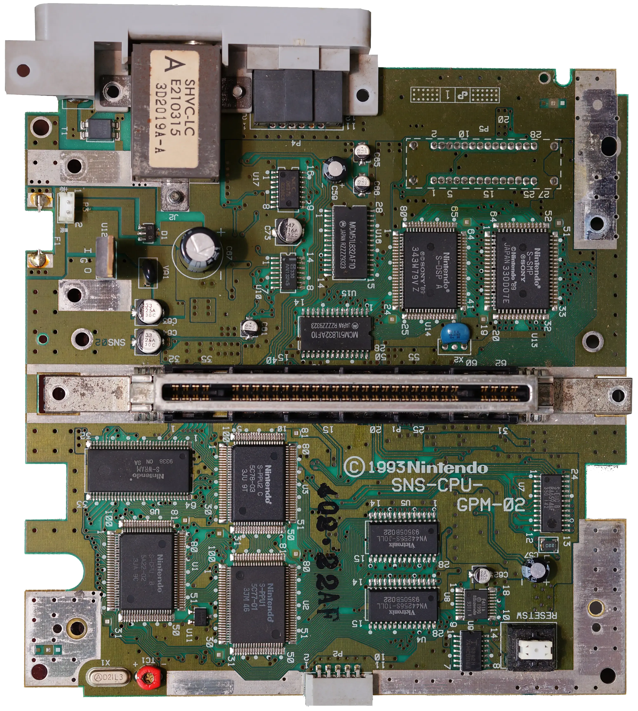
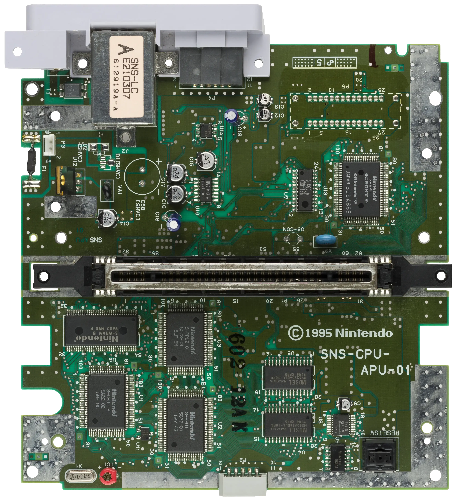
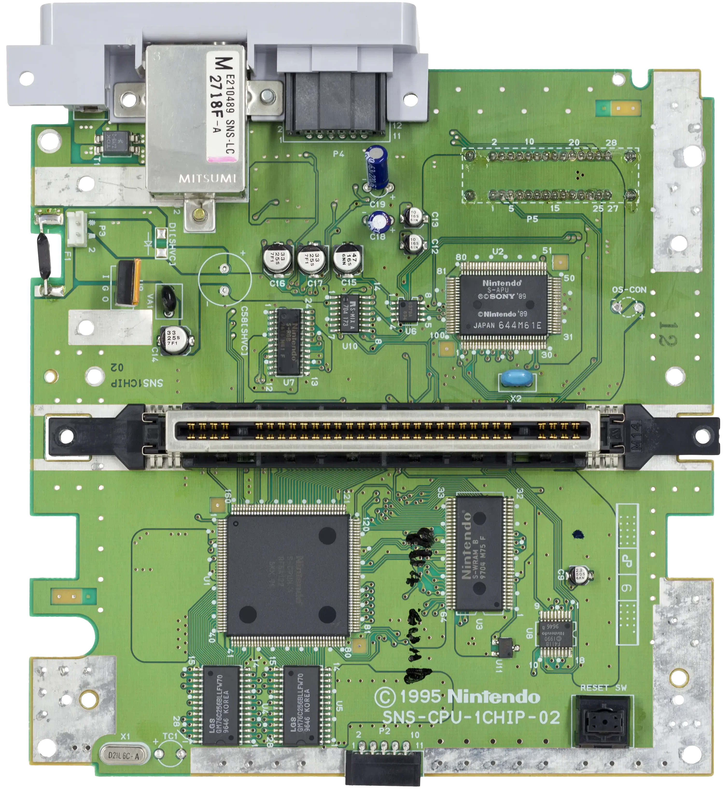
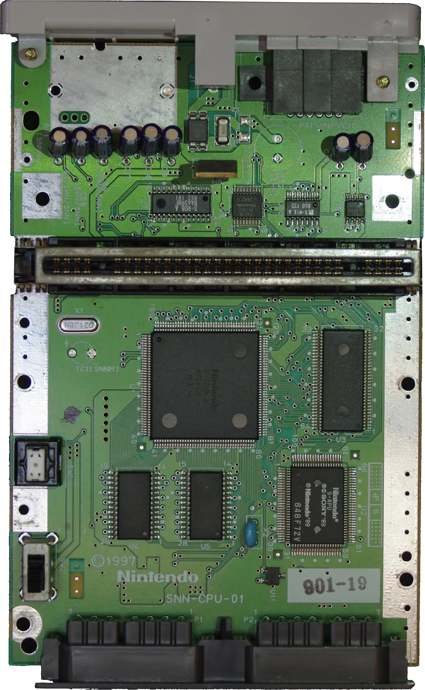

Over the impressive lifespan of its 16-bit machine (12 years[1]), Nintendo produced twelve versions of the motherboard. What is noteworthy is how they managed to reduce the number of chips necessary over time.
Looking at a summary table may seem like it is a daunting task to make sense of all of it.
| NTSC Motherboards | 1990 | 1991 | 1992 | 1993 | 1994 | 1995 | 1996 | 1997 |
|---|---|---|---|---|---|---|---|---|
| SHVC-CPU-01 | ||||||||
| SNS-CPU-GPM-01 | ||||||||
| SNS-CPU-GPM-02 | ||||||||
| SNS-CPU-RGB-01 | ||||||||
| SNS-CPU-RGB-02 | ||||||||
| SNS-CPU-APU-01 | ||||||||
| SNS-CPU-1CHIP-01 | ||||||||
| SNS-CPU-1CHIP-02 | ||||||||
| SNS-CPU-1CHIP-03 | ||||||||
| SNN-CPU-01 |
| PAL Motherboards | 1990 | 1991 | 1992 | 1993 | 1994 | 1995 | 1996 | 1997 |
|---|---|---|---|---|---|---|---|---|
| SNSP-CPU-01 | ||||||||
| SNSP-CPU-1CHIP-01 | ||||||||
| SNN-CPU-01 |
It is actually not that hard since most of the changes were minor updates. There were only four major generation named Classic (■), APU (■), 1-CHIP (■), and Junior (■).
The original Super Nintendo from 1990-1992 had a lot of chips inside. Count them and you will find fifteen.
The cartridge slot divides the system in two. Above are the sound system processors and RAM[2][3]:
Below the cartridge slot are the CPU/PPU sub-systems and their RAM:
Notice in U12, this is not a chip but a +5V Regulator (7805). This little guy is present on every version of the SNES.
The APU version of the SNES brings down the chip total to twelve. This version is also sometimes referenced as "3-CHIP".
The Nintendo developer documentation mentioned a logical Audio Processing Unit[4], made of a S-SMP chip and a DSP chip. With this version, the two are fused into an actual chip labeled "APU".
Top part (audio):
Bottom part (cpu + graphics):
Notice the oscillator (left of red thingy in X1) and resonator (blue thingy in X2) we studied last week. These two will be the only unchanged components through the whole console lifetime.
With the 1-CHIP version, Nintendo took a giant step forward to fuse the CPU and the two PPU into a single ASIC. This motherboard brings down the total number of chips to nine.
Top part (audio):
Bottom part (audio):
The red thingy is gone, the red variable capacitor is likely moved to the back of the mobo.
The Super Nintendo Jr (also called Mini) is the final form of the SNES. Only nine chips remain. The top and bottom part no longer are dedicated to a specific sub-system.
Top part:
Bottom part:
Notice how the blue resonator (in X2) has managed to survive all this. So did the oscillator (in X1).
The retro community has established guidelines[5][6] to help enthusiasts buy the right console for themselves. From failure rate to video output quality, everything is detailed on consolemods.org SNES Wiki.
| ^ | [1] | Introduced in 1991 in Japan, last produced in 2003. |
| ^ | [2] | SNES motherboards chips reference |
| ^ | [3] | SNES & N64 Video Encoder Information/Datasheets |
| ^ | [4] | SNES Development Manual, fig 2-22-1 |
| ^ | [5] | SNES Buying Guide |
| ^ | [6] | SNES Model Differences |